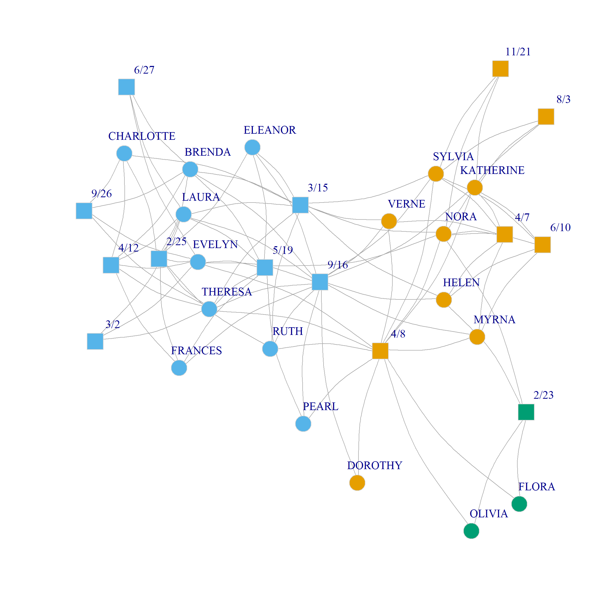
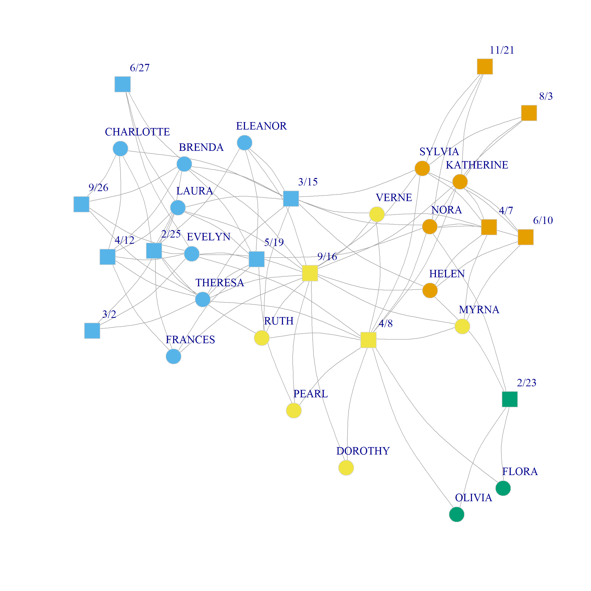
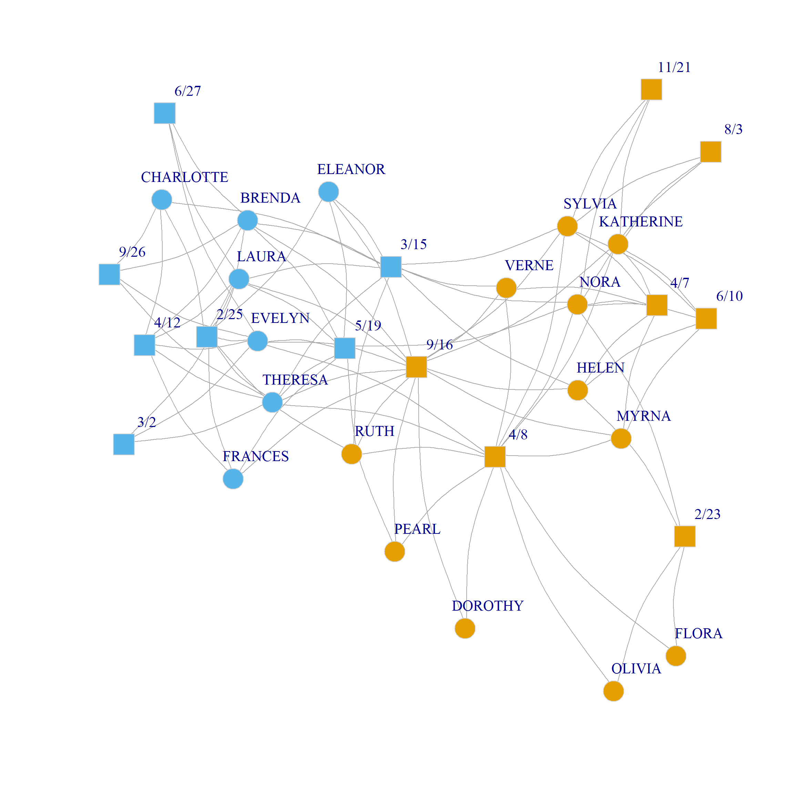
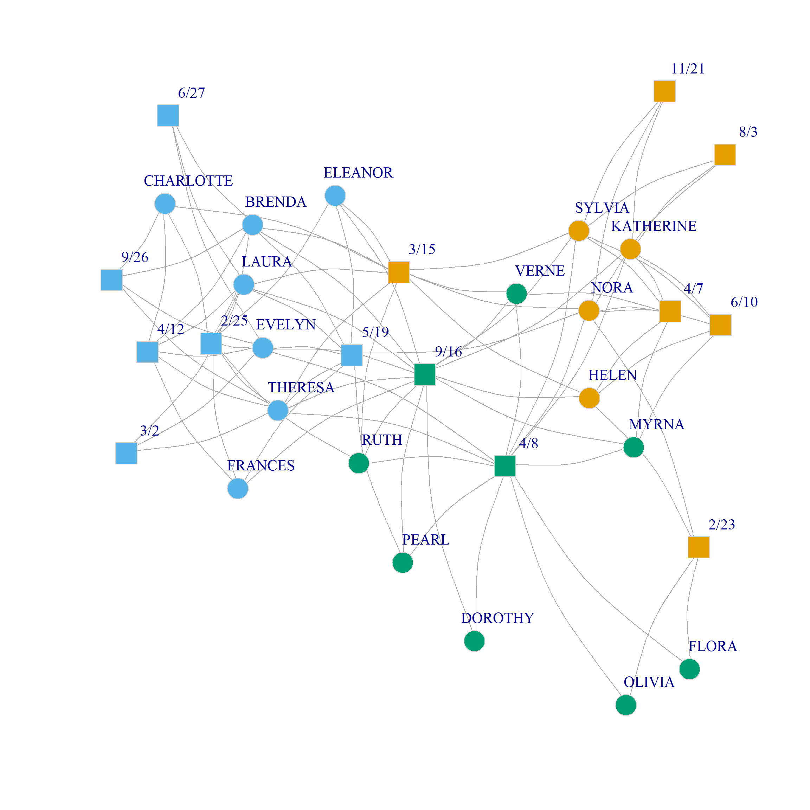
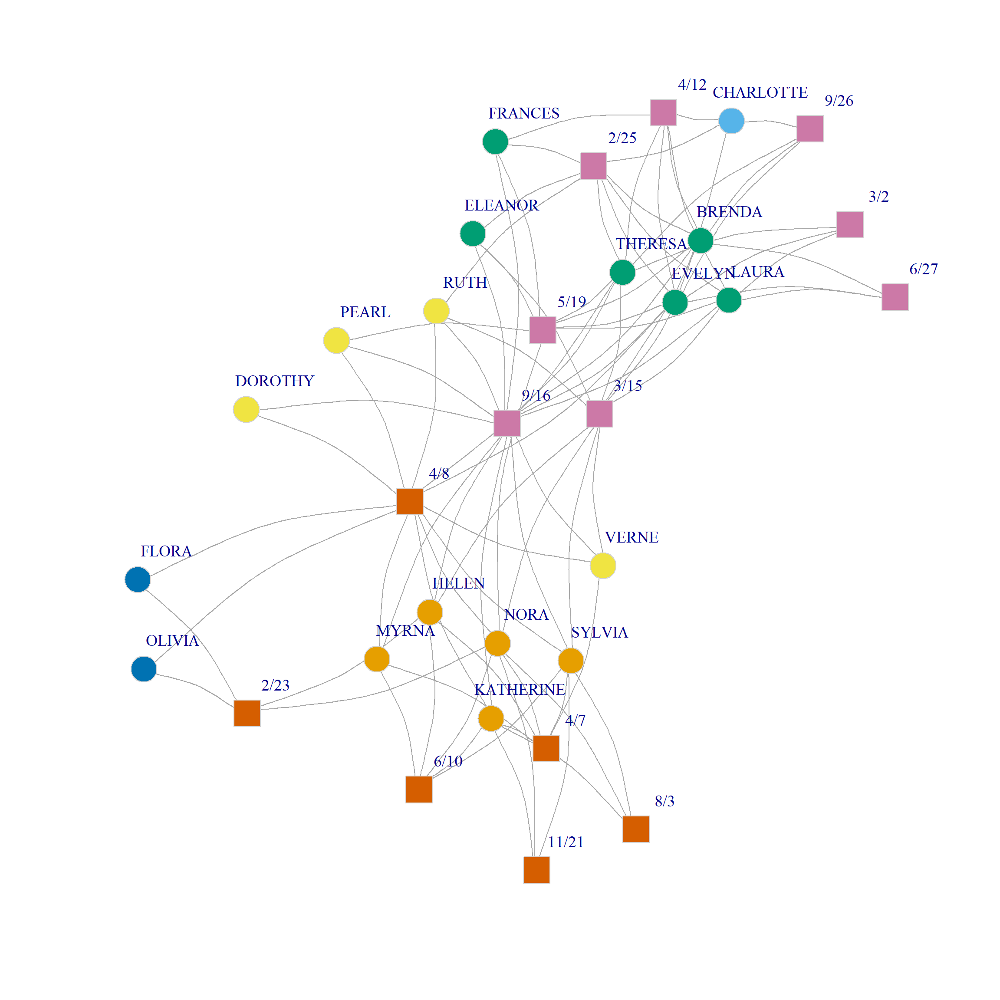

Spectral Clustering of Two-Mode Networks
We can use a variant of the spectral clustering approach to find communities in two-mode networks (Wu, Gu, and Yang 2022). This approach combines Correspondence Analysis (CA) and k-means clustering on multiple dimensions.
So let’s bring back our old friend, the Southern Women data:
Let’s also compute the bi-adjacency modularity matrix:
dp <- as.matrix(rowSums(A))
dg <- as.matrix(colSums(A))
dpdg <- dp %*% t(dg) #person x group degree product matrix
B <- A - dpdg/sum(A)
round(B, 2) 6/27 3/2 4/12 9/26 2/25 5/19 3/15 9/16 4/8 6/10 2/23
EVELYN 0.73 0.73 0.46 0.64 0.28 0.28 -0.90 -0.26 -0.08 -0.45 -0.36
LAURA 0.76 0.76 0.53 -0.31 0.37 0.37 0.21 -0.10 -0.94 -0.39 -0.31
THERESA -0.27 0.73 0.46 0.64 0.28 0.28 0.10 -0.26 -0.08 -0.45 -0.36
BRENDA 0.76 -0.24 0.53 0.69 0.37 0.37 0.21 -0.10 -0.94 -0.39 -0.31
CHARLOTTE -0.13 -0.13 0.73 0.82 0.64 -0.36 0.55 -0.63 -0.54 -0.22 -0.18
FRANCES -0.13 -0.13 0.73 -0.18 0.64 0.64 -0.45 0.37 -0.54 -0.22 -0.18
ELEANOR -0.13 -0.13 -0.27 -0.18 0.64 0.64 0.55 0.37 -0.54 -0.22 -0.18
PEARL -0.10 -0.10 -0.20 -0.13 -0.27 0.73 -0.34 0.53 0.60 -0.17 -0.13
RUTH -0.13 -0.13 -0.27 -0.18 0.64 -0.36 0.55 0.37 0.46 -0.22 -0.18
VERNE -0.13 -0.13 -0.27 -0.18 -0.36 -0.36 0.55 0.37 0.46 -0.22 -0.18
MYRNA -0.13 -0.13 -0.27 -0.18 -0.36 -0.36 -0.45 0.37 0.46 0.78 -0.18
KATHERINE -0.20 -0.20 -0.40 -0.27 -0.54 -0.54 -0.67 0.06 0.19 0.66 -0.27
SYLVIA -0.24 -0.24 -0.47 -0.31 -0.63 -0.63 0.21 -0.10 0.06 0.61 -0.31
NORA -0.27 -0.27 -0.54 -0.36 -0.72 0.28 0.10 -1.26 -0.08 0.55 0.64
HELEN -0.17 -0.17 -0.34 -0.22 -0.45 -0.45 0.44 0.21 -0.67 0.72 0.78
DOROTHY -0.07 -0.07 -0.13 -0.09 -0.18 -0.18 -0.22 0.69 0.73 -0.11 -0.09
OLIVIA -0.07 -0.07 -0.13 -0.09 -0.18 -0.18 -0.22 -0.31 0.73 -0.11 0.91
FLORA -0.07 -0.07 -0.13 -0.09 -0.18 -0.18 -0.22 -0.31 0.73 -0.11 0.91
4/7 11/21 8/3
EVELYN -0.54 -0.27 -0.27
LAURA -0.47 -0.24 -0.24
THERESA -0.54 -0.27 -0.27
BRENDA -0.47 -0.24 -0.24
CHARLOTTE -0.27 -0.13 -0.13
FRANCES -0.27 -0.13 -0.13
ELEANOR -0.27 -0.13 -0.13
PEARL -0.20 -0.10 -0.10
RUTH -0.27 -0.13 -0.13
VERNE 0.73 -0.13 -0.13
MYRNA 0.73 -0.13 -0.13
KATHERINE 0.60 0.80 0.80
SYLVIA 0.53 0.76 0.76
NORA 0.46 0.73 0.73
HELEN 0.66 -0.17 -0.17
DOROTHY -0.13 -0.07 -0.07
OLIVIA -0.13 -0.07 -0.07
FLORA -0.13 -0.07 -0.07Great! Now, from this information we can compute a version of the bipartite modularity matrix:
n <- nrow(A) + ncol(A)
Np <- nrow(A)
names <- c(rownames(A), colnames(A))
B2 <- matrix(0, n, n) #all zeros matrix of dimensions (p + g) X (p + g)
B2[1:Np, (Np + 1):n] <- B #putting B in the top right block
B2[(Np + 1):n, 1:Np] <- t(B) #putting B transpose in the lower-left block
rownames(B2) <- names
colnames(B2) <- namesAnd now let’s find the CA scores. This time will use the canned function CA from the the package FactoMineR
Which computes CA directly on the bi-adjacency matrix (the argument ncp asks to keep the first ten dimensions).
We can now extract the CA scores for persons and groups from the resulting object:
Dim 1 Dim 2 Dim 3 Dim 4 Dim 5
EVELYN -0.7994396 -0.11278306 0.12856965 0.491615655 0.36993238
LAURA -0.8426887 0.03973055 0.11862978 0.286643489 0.10696165
THERESA -0.6538505 -0.08107422 0.03285721 0.066653892 0.11835519
BRENDA -0.8552592 0.05084420 0.26039689 -0.082978126 0.05028130
CHARLOTTE -0.9735517 0.03683948 0.66023345 -0.774105247 0.08510784
FRANCES -0.7973597 0.05794469 -0.20558235 -0.001077288 -0.59307835
Dim 6 Dim 7 Dim 8 Dim 9 Dim 10
EVELYN -0.007414199 -0.007447136 -0.02256155 -0.0160061655 0.08340311
LAURA 0.519058804 0.358983310 0.06243870 0.1954326939 -0.10193085
THERESA -0.238792769 0.037114413 0.44547214 -0.1638696977 0.04645662
BRENDA 0.060849392 -0.093559773 -0.53495958 -0.1262516982 0.02818219
CHARLOTTE -0.721861078 -0.222554541 0.02152725 -0.0001022383 -0.04432666
FRANCES 0.178454033 -0.648007177 0.12713961 0.3578859472 -0.29201035 Dim 1 Dim 2 Dim 3 Dim 4 Dim 5 Dim 6
6/27 -1.0510521 -0.013102803 0.40045025 0.624502007 0.53693139 0.6062955
3/2 -0.9662871 -0.090934069 0.22094083 0.758901614 0.60626508 0.2889617
4/12 -1.0357695 -0.002506996 0.39252639 -0.005949514 0.07005287 -0.1110437
9/26 -1.0359803 -0.046981456 0.64023822 -0.201296127 0.47641399 -0.7205873
2/25 -0.8840034 0.002527085 0.00616034 -0.304708001 -0.31330029 -0.1008760
5/19 -0.5723848 -0.007363883 -0.15907563 0.336653678 -0.55713599 0.3565649
Dim 7 Dim 8 Dim 9 Dim 10
6/27 0.341243814 -0.78585220 0.09303009 0.022211664
3/2 0.514095893 0.77040262 0.02721689 0.064255000
4/12 -0.380608237 0.07861703 0.21614264 -0.322353047
9/26 -0.284177968 -0.10776494 -0.40181489 0.196215569
2/25 0.009376108 0.04679332 0.31794275 0.121060750
5/19 -0.215101435 0.05292157 -0.34808611 0.004513752Great! You can verify that these are the same scores we obtained in two-mode CA lecture via a more elaborate route.
Now, we can just create our U matrix by stacking the person and group scores using the first three dimensions:
Dim 1 Dim 2 Dim 3
EVELYN -0.7994396 -0.11278306 0.12856965
LAURA -0.8426887 0.03973055 0.11862978
THERESA -0.6538505 -0.08107422 0.03285721
BRENDA -0.8552592 0.05084420 0.26039689
CHARLOTTE -0.9735517 0.03683948 0.66023345
FRANCES -0.7973597 0.05794469 -0.20558235 Dim 1 Dim 2 Dim 3
4/8 0.5140165 -0.4896890 -0.47959026
6/10 1.1173628 0.5729577 0.23464730
2/23 1.2219952 -2.0539686 0.69618973
4/7 1.0223902 0.5159415 -0.04625319
11/21 1.1742556 0.9078702 0.66121084
8/3 1.1742556 0.9078702 0.66121084Nice! Now we can just feed U to our k.cuts function to place persons and groups into cluster assignments beginning with two and ending with ten:
Of course, we can’t use the mod.check function we used before because that relies on the standard method for checking the modularity in one-mode networks and doesn’t take into account the structural zeros in the bipartite graph.
So we need to come up with a custom method to check the modularity for the bipartite case.
First, we need a function that takes a cluster assignment vector containing numbers for each cluster \(k = \{1, 2, 3, \ldots C\}\) and turns it into a dummy coded cluster assignment matrix:
Let’s test it out:
[,1] [,2] [,3] [,4]
[1,] 0 1 0 0
[2,] 0 1 0 0
[3,] 0 1 0 0
[4,] 0 1 0 0
[5,] 0 1 0 0
[6,] 0 1 0 0
[7,] 0 1 0 0
[8,] 0 0 0 1
[9,] 0 0 0 1
[10,] 0 0 0 1
[11,] 0 0 0 1
[12,] 1 0 0 0
[13,] 1 0 0 0
[14,] 1 0 0 0
[15,] 1 0 0 0
[16,] 0 0 0 1
[17,] 0 0 1 0
[18,] 0 0 1 0
[19,] 0 1 0 0
[20,] 0 1 0 0
[21,] 0 1 0 0
[22,] 0 1 0 0
[23,] 0 1 0 0
[24,] 0 1 0 0
[25,] 0 1 0 0
[26,] 0 0 0 1
[27,] 0 0 0 1
[28,] 1 0 0 0
[29,] 0 0 1 0
[30,] 1 0 0 0
[31,] 1 0 0 0
[32,] 1 0 0 0Great! Looks like it works.
Finally, we need to write a custom function for bipartite modularity checking across different assignments:
The function mod.check2 needs three inputs: The bipartite modularity matrix, a list with different assignments of the nodes in the bipartite graph to different clusters, and the bipartite adjacency matrix. It returns a vector m with the modularities of each of the partitions in the list c.
And, now, for the big reveal:
2 3 4 5 6 7 8 9 10
0.318 0.306 0.338 0.257 0.248 0.224 0.190 0.184 0.155 Looks like the spectral clustering results favor a four-community partition although the more parsimonious three and binary community partitions also look pretty good.
Figure 1 (a) and Figure 1 (b) show a plot of the three and four community solutions according to the CA dimensions (since we already saw the binary partition in the CA handout).
Of course, just like we did with one-mode networks, we can also obtain a spectral clustering directly from the eigenvectors of the bipartite modularity matrix in just a couple of lines:
2 3 4 5 6 7 8 9 10
0.319 0.334 0.271 0.216 0.179 0.144 0.133 0.101 0.057 Here we create the U matrix from the first two dimensions of the eigendecomposition of the bipartite modularity matrix. The results suggest that the three community partition is optimal, although the two-community one also does well. The corresponding splits are shown in Figure 1 (c) and Figure 1 (d).
Note that the main difference between CA and modularity based clustering in two-mode networks is that modularity seems to prefer evenly balanced communities (in terms of number of nodes), while CA does not mind grouping nodes into small communities (like \(\{Flora, Nora, 2/23\}\))




Bipartite Modularity Allowing People and Groups to Belong to Different Number of Communities
One limitation of Barber’s (2007) approach to computing the modularity we have been using to analyze community structure in two-mode networks is that it can only be used under the assumption that the number of communities is the same for both persons and groups.
However, it could be that the optimal partition is actually one in which the people node set is split into a different number of clusters than the group node set.
So we need a way to evaluate the modularity of a partition when we have different number of communities on the people and group side.
Here’s how to do it.
First, we generate two separate candidate community assignments for people and groups via spectral clustering from CA using the first six eigenvectors:
As an example, let’s pick the solution that partitions people into four communities and the groups into three communities:
Given this information, we can create a \(4 \times 3\) matrix recording the proportion of ties in the network that go from person-community \(l\) to group-community \(m\):
e <- matrix(0, 4, 3)
for (l in 1:4) {
for (m in 1:3) {
e[l, m] = sum(A[C.p == l, C.g == m]) * 1/sum(A)
}
}
round(e, 2) [,1] [,2] [,3]
[1,] 0.19 0.02 0.17
[2,] 0.00 0.00 0.04
[3,] 0.00 0.02 0.02
[4,] 0.00 0.00 0.53For instance, this matrix says that 53% of the ties in the Southern women data go from people in the fourth community to groups in the third community, according to the CA spectral partition.
Suzuki and Wakita (2009), building on work by Murata (2009), suggest using the e matrix above to compute the modularity of any pair of person/group community assignment according to the following formula:
\[ Q = \frac{1}{2}\sum_{l, m}\frac{e_{lm}}{e_{l+}}\left(e_{lm} - e_{l+}e_{+m}\right) \]
Where \(e_{lm}\) is the proportion of edges connecting people in the \(l^{th}\) person-community to groups in the \(m^{th}\) event-community, \(e_{l+}\) is the proportion of edges originating from person-community \(i\) (the corresponding entry of the row sum of e), and \(e_{+m}\) is the proportion of edges originating from nodes in group-community \(j\) (the corresponding entry of the column sum of e).
So the idea is that given a partition of the person nodes into \(L\) communities and a partition of the group nodes into \(M\) communities, we can generate an e matrix like the one above and compute the corresponding modularity of that person/group partition using the above equation.
Here’s a function that computes the e matrix from a pair of person/group partitions and then returns the \(Q\) value corresponding to that matrix using the above formula:
find.mod <- function(w, x, y) {
Cx <- max(x)
Cy <- max(y)
M <- sum(w)
e <- matrix(0, Cx, Cy)
for (l in 1:Cx) {
for (m in 1:Cy) {
e[l, m] = sum(w[x == l, y == m]) * 1/M
}
}
Q <- 0
a <- rowSums(e)
b <- colSums(e)
for (l in 1:Cx) {
for (m in 1:Cy) {
Q <- Q + (e[l, m]/a[l] * (e[l, m] - a[l]*b[m]))
}
}
return(Q/2)
}So for the e matrix from the above example, \(Q\) would be:
Which looks like a positive number. But is it the biggest of all the possible community partition combinations between people and groups?
To answer this question, we can use the find.mod function to compute the modularity between every pair of partitions between people and groups that we calculated earlier. Since we computed eight different partitions for people and groups this leads to \(8 \times 8 = 64\) pairs.
Here’s a wrapper function over find.mod that computes the corresponding modularity values for each partition pair:
mod.mat <- function(d) {
q <- matrix(0, d, d)
for (i in 1:d) {
for (j in 1:d) {
q[i, j] <- find.mod(A, k.cuts.p[[i]], k.cuts.g[[j]])
}
}
return(q)
}
Q <- round(mod.mat(8), 3)
Q [,1] [,2] [,3] [,4] [,5] [,6] [,7] [,8]
[1,] 0.102 0.058 0.042 0.031 0.032 0.033 0.029 0.024
[2,] 0.106 0.066 0.050 0.038 0.039 0.041 0.035 0.033
[3,] 0.104 0.072 0.056 0.042 0.045 0.043 0.037 0.039
[4,] 0.112 0.074 0.069 0.055 0.058 0.056 0.050 0.046
[5,] 0.112 0.075 0.069 0.058 0.061 0.060 0.054 0.050
[6,] 0.110 0.074 0.075 0.064 0.061 0.063 0.058 0.054
[7,] 0.111 0.077 0.077 0.066 0.067 0.068 0.062 0.059
[8,] 0.111 0.077 0.078 0.067 0.067 0.070 0.064 0.060Interestingly, the analysis suggests that the maximum modularity \(Q = 0.112\) is obtained with a partition of people into five communities and groups into two communities corresponding to cells \((4, 1)\) of the above matrix.
Here’s what this community assignment looks like in the Southern Women data:

The analysis separates two groups of densely connected actors of size six and five, respectively, namely, {Brenda, Theresa, Laura, Frances, Evelyn, Eleanor} and {Katherine, Nora, Sylvia, Myrna, Helen} along with their corresponding events from the one another. In the same way, {Pearl, Dorothy, Ruth, Verne} form a community of more peripheral actors who selectively attend the more popular events; {Flora, Olivia} are a two-actor community occupying the most peripheral position. Among the core set of actors, {Charlotte} occupies a singleton-community of her own.
Events are partitioned into two broad groups: One the one hand, we have those selectively attended by the larger community of densely connected actors along with the most popular events; on the other hand, we have the events selectively attended by the smaller group of densely connected actors.